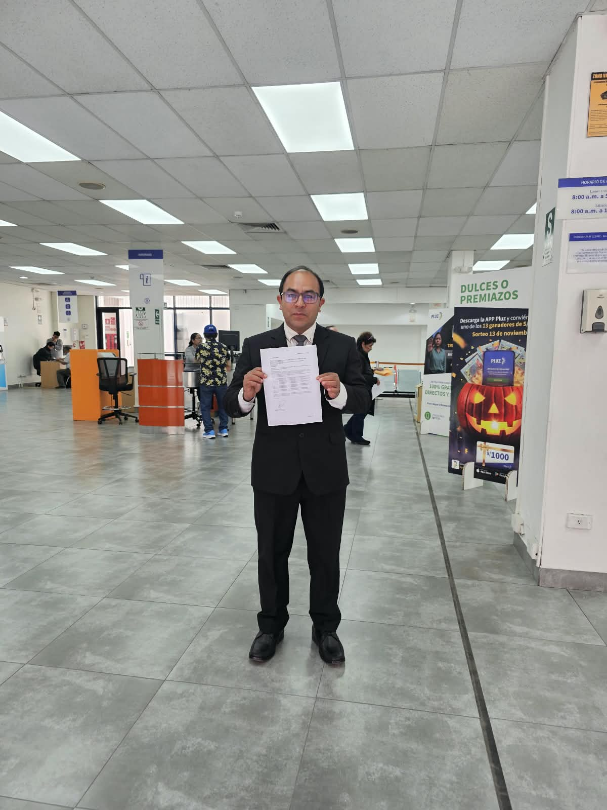
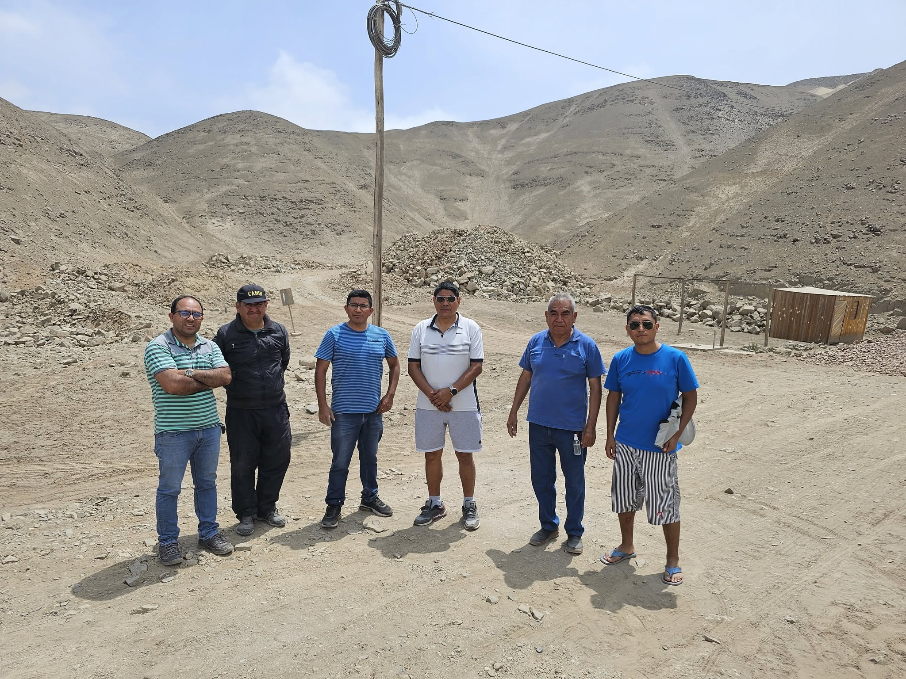
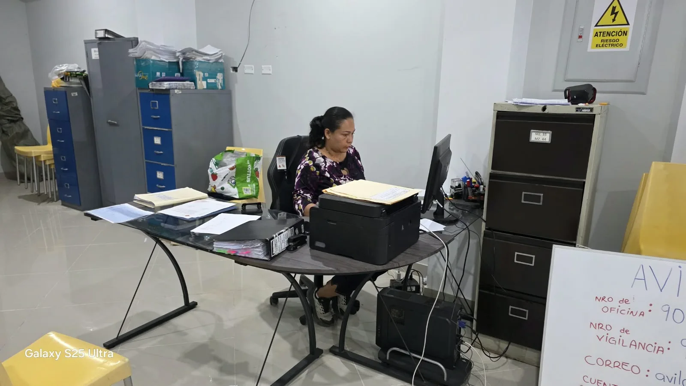
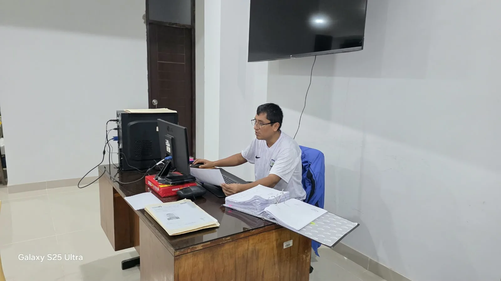
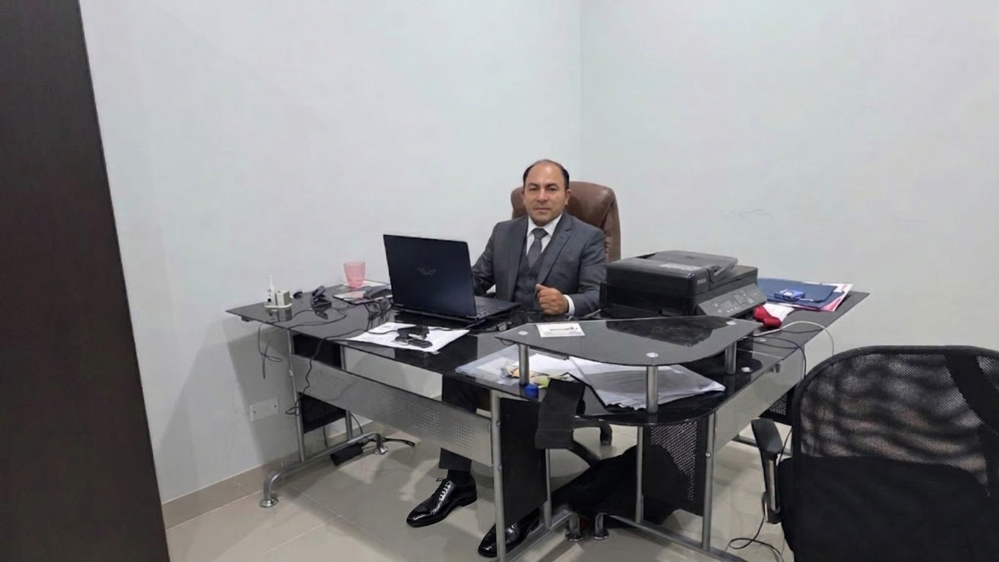
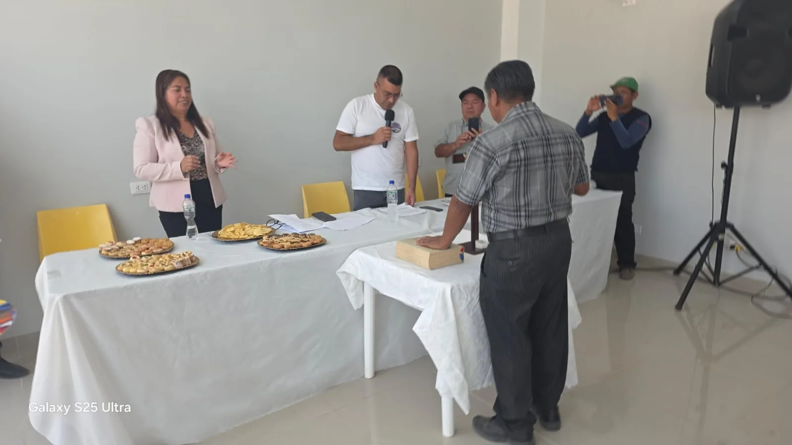
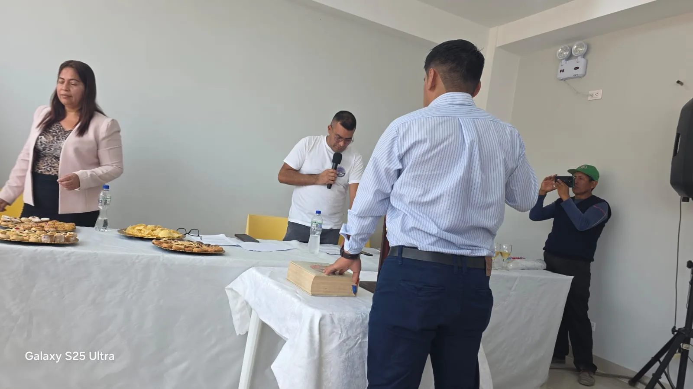
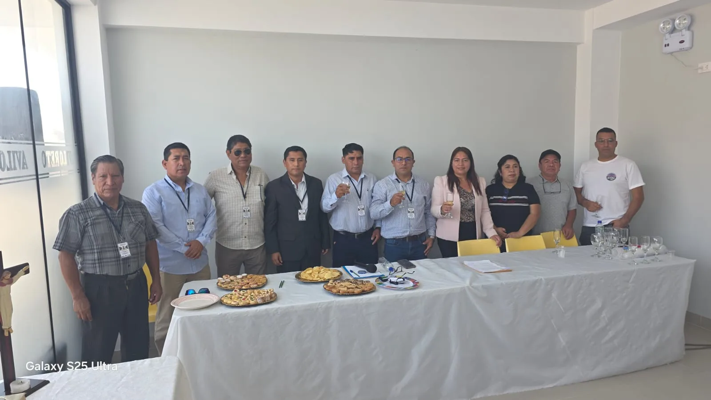

Presidente del Consejo Directivo
Elvis Antonio Tello Tarrillo
Consejo Directivo · Período 2026 - 2029
Nuestra asociación
Conoce nuestra historia, propósito y compromiso con el desarrollo de nuestra comunidad.
Quiénes somos
Somos una asociación de vivienda comprometida con el desarrollo y bienestar de nuestros socios, promoviendo la participación, organización y crecimiento de nuestra comunidad.
Trabajamos conjuntamente para impulsar iniciativas y proyectos que contribuyan a mejorar nuestro entorno y la calidad de vida de nuestros vecinos.

Nuestra sede
Las oficinas de AVILORETO ocupan un área de 135 m² y se encuentran terminadas al 100 %. Fueron acondicionadas para brindar una atención organizada y servicios de calidad a los asociados, con espacios para Secretaría, Dirección y una amplia sala de reuniones y acuerdos. Adicionalmente, la asociación cuenta con un local y oficina para el Consejo de Vigilancia.



Gestión institucional
La asociación informa que el aporte mensual es de S/ 17. La separación de asociados por falta de pago de aportes y las expulsiones por motivos de conducta se realizan conforme al estatuto vigente. Estas medidas afectan la condición de asociado, pero no extinguen el derecho de propiedad.
Para asociados con deudas superiores a S/ 1,500, se promueve la conciliación extrajudicial mediante un centro con el que existe un convenio. De acuerdo con las facultades aprobadas por la Asamblea General, el presidente puede gestionar una reducción de deuda durante la conciliación, según cada caso.
Nuestro propósito
Promover el desarrollo y bienestar de nuestros asociados mediante la gestión de servicios básicos como luz definitiva, alcantarillado, gas, telecomunicaciones y videovigilancia. Asimismo, impulsar un centro recreacional de primer nivel, con canchas deportivas, piscinas, local para eventos y zona de parrillas para el disfrute de nuestros asociados y visitantes.
Ser una asociación líder en el distrito de Santa Rosa, reconocida por promover mejores viviendas, servicios recreativos, educación y comercio, contribuyendo al desarrollo de nuestra comunidad y convirtiéndola en un espacio atractivo para nuestros vecinos y visitantes de Lima Metropolitana.
Integrantes del Consejo Directivo de la Asociación de Vivienda Virgen de Loreto Santa Rosa Piedras Gordas.
Período 2026 - 2029
Consejo Directivo · Período 2026 - 2029
Integrantes del Consejo de Vigilancia de nuestra asociación.
Período 2026 - 2029
Registro institucional de la juramentación de los consejos de la asociación.


